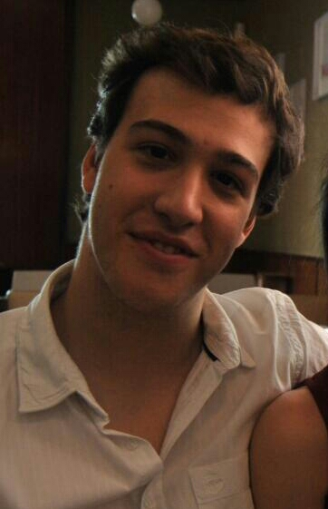
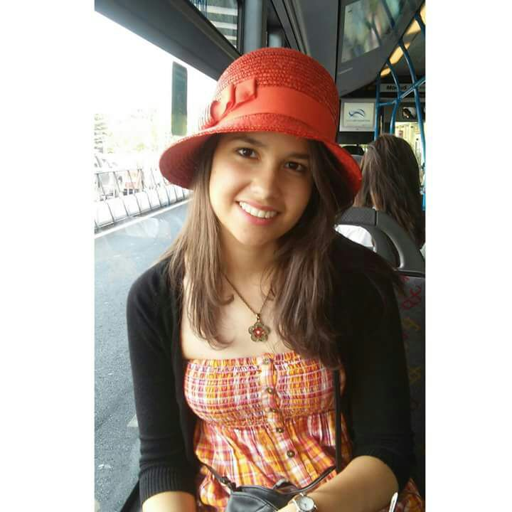

Paper Dreams
De tus sueños al papel
De tus sueños al papel
Miembros que conforman el proyecto
A continuación podrá consultar el perfil de los miembros de Bi-Inestables:Juan Mas Aguilar
Nombre: Juan Mas Aguilar
Dirección de Contacto: jumas@ucm.es
Descripción: Soy un chico que disfruta con la buena vida. Me gusta hacer deporte, viajar y escribir. Interesado especialmente en la seguridad informática pero con interés en muchos más campos. Trabajador y más vago que la chaqueta de un guardia planteo una contradicción vital muy interesante que no quita el hecho de ser un fiel compañero a la hora de desarrollar un proyecto.
Lema: Cuando hay que trabajar se trabaja, pero con el mínimo esfuerzo y el máximo resultado.
Elianni Agüero Selva
Nombre: Elianni Agüero Selva
Dirección de Contacto: eaguero@ucm.es
Descripción: Ingeniera Informática en potencia. Me gusta la música, escucharla solo porque cantar se me da muy mal. También me gusta viajar e ir al cine y al teatro. Me considero una persona trabajadora y creativa, aunque no me gusta nada improvisar.
Lema: Trabaja para que te oigan, canta sin que te escuchen.
Alfonso Soria Muñoz
Nombre: Alfonso Soria Muñoz
Dirección de Contacto: alfsoria@ucm.es
Descripción: Futuro ingeniero informático nacido en Madrid en 1996. Me gusta el deporte (especialmente el snowboard) y la lectura.
Lema: Be happy and life will return the smiles.
Gonzalo Jiménez Corta
Nombre: Gonzalo Jiménez Corta
Dirección de Contacto: gonzajim@ucm.es
Descripción: Me gusta leer, jugar a videojuegos, escuchar música y quedar con amigos. Además de la Informática, estoy interesado en la Física y en algunos temas relacionados con la Biología. Adicto a Pokémon.
Lema: No dejes para mañana lo que puedes hacer hoy.